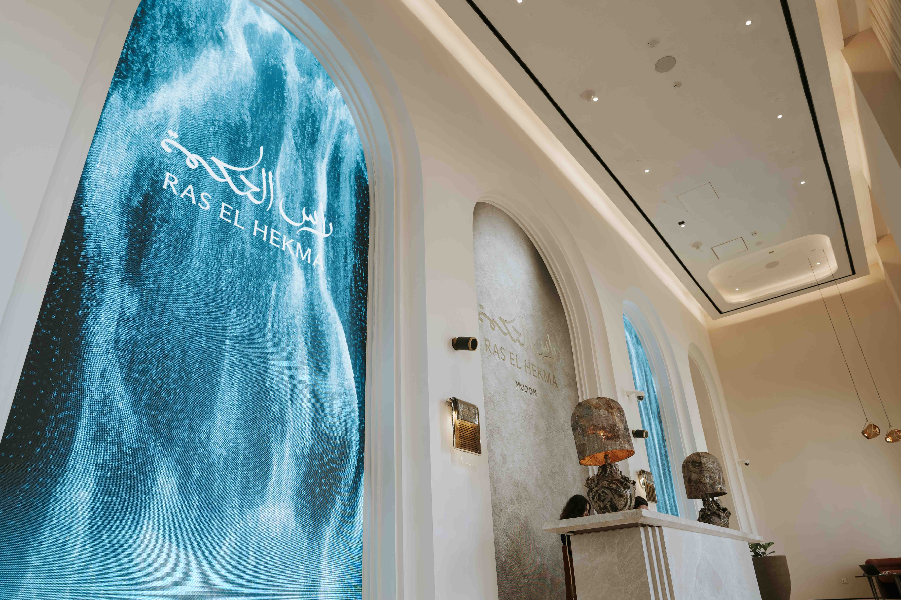
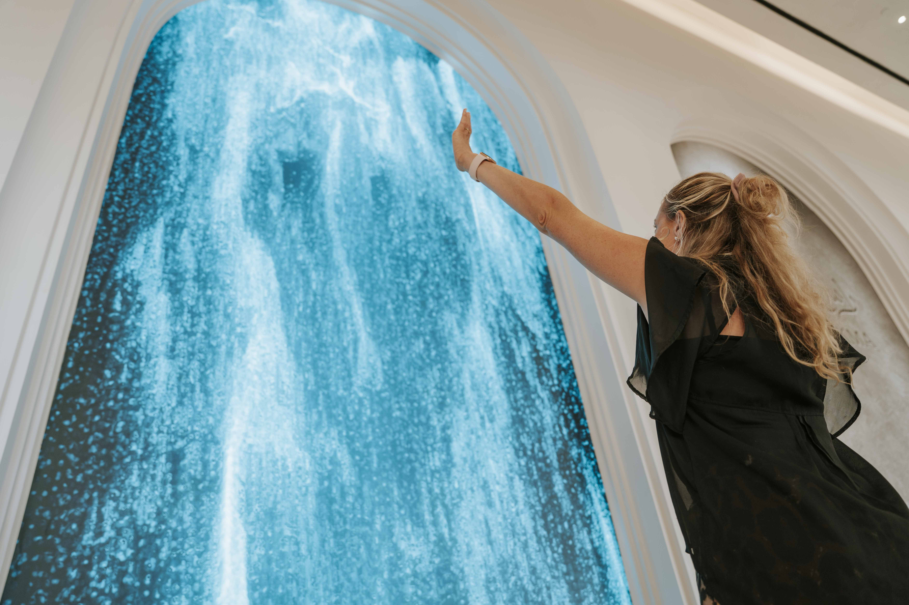
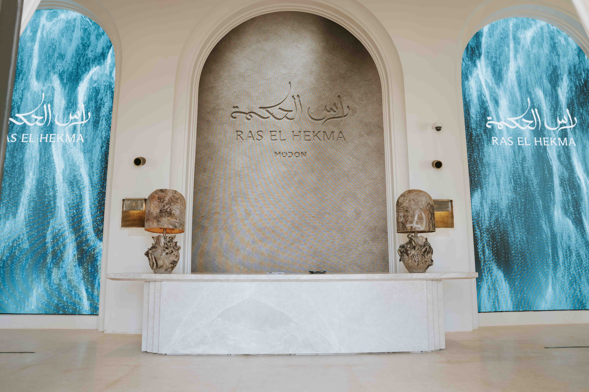

02 / Portfolio
Modon
Interactive Waterfalls
Created for Modon at the Ras El Hekma experience centre, 5-metre high interactive waterfalls bring the colours and energy of the Mediterranean sea to life. Set in the reception area, visitors are invited to reach out and disrupt the flow and watch and hear how the waterfalls respond.
Designed to blend seamlessly with the architectural space the installation has been shortlisted for the Design Middle East Awards in 2 categories:
Ras El Hekma Sales Experience Centre – Innovative Installation of the Year
Ras El Hekma Sales Experience Centre – Innovation in Design Award
Working with Pixel Artworks I developed the interactive elements of the installation in Touchdesigner and Notch, creating a real-time sensor driven system that can take up to 8 simultaneous users and drives visual elements of the waterfall as well as bespoke audio reactivity.


